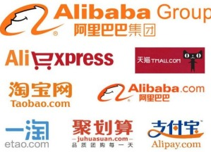
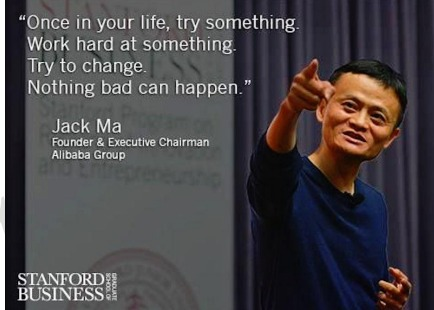
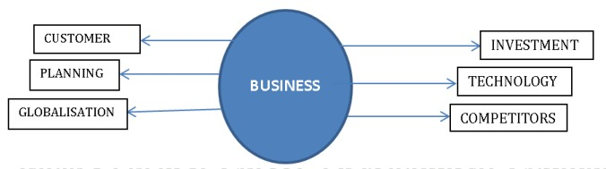
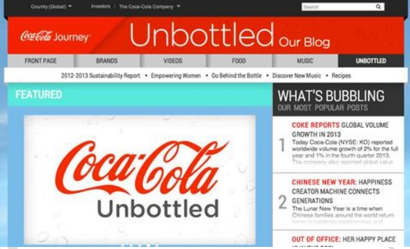
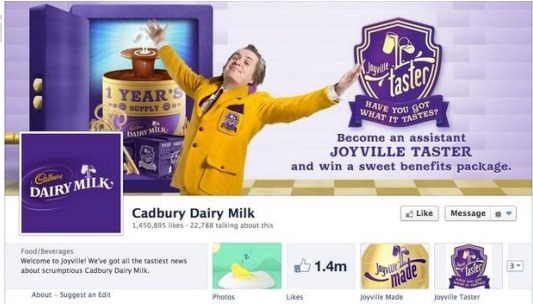
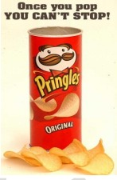

WHAT IS BUSINESS?
Business is an economic activity of production and distribution of goods and services. It provides employment
opportunities in different sectors like banking, insurance, transport, industries, trade etc. it is an economic activity
corned with creation of utilities for the satisfaction of human wants.
Business is the activity of making, buying or selling goods or providing services in exchange for money. Starting from
coffee shops to colleges.
WORDS OF WHEELER DEALER
"It was my love for cooking, the desire to achieve something big in life, hard work, and my self confidence that
contributed to my growth,” says Aasife, who is now on a rapid expansion mode
Jack ma
EARLY LIFE
- Without money or connections, the only way Ma could get ahead was through education. After high school, he
applied to go to college. After a great deal of studying, he finally passed on the third try, going on to attend
Hangzhou Teacher's Institute
- Ma was a natural with his students and loved his job though he made only $12 a month at a local university.
- Ma had no experience with computers or coding, but he was captivated by the internet when he used it for the
first time during a trip to the US in 1995
- The nickname, ‘Jack’ was given to him by a tourist he befriended.
MOMENT OF TRUTH
He started a translation business and made the trip to help a Chinese firm recover a payment. Ma's first online
search was "beer," but he was surprised to find that no Chinese beers turned up in the results. It was then that
he decided to create an internet company for China
INTRODUCTORY STEP
- Ma tried his luck by starting a venture, which later turned out to be a disaster.
-
Four years later he gathered 17 of his friends in his apartment and convinced them to invest in him and his
vision for an online marketplace he called "Alibaba." The site allowed exporters to post product listings that
customers could buy directly
-
Soon, the service started to attract members from all over the world. By October 1999, the company had raised
$5 million from Goldman Sachs and $20 million from SoftBank, a Japanese telecom company that also invests in
technology companies.
HARDSHIPS
-
When he was applying for college, he failed his entrance exams three times. He scored 1 ou1 of 120 on the math
portion of his college entrance exam
-
After three years in college, he tried applying for 30 jobs and got rejected by all of them
-
When he applied to KFC, he was among 24 applicants. Every applicant got in except him
-
When he applied to work in the police force, he was the only one that was rejected out of five applicants. He
was told, “No, you’re no good.”
CONTEMPORARY
-
Today Alibaba Group has become one of the world's largest e-commerce businesses. Alibaba's revenue in the
12 months ending in March 2017 rose by 56% to $23 billion
-
Alibaba's IPO in New York in 2014 set a record as the world's biggest public stock offerin

WORDS OF WHEELER DEALER
Jack Ma is a classic rags-to-riches story, but even more impressive than his fabulous wealth is his uncanny level of
persistence. He is proof that no series of failures (despite how cripplingly depressing) can keep someone from
achieving their dreams.

The above stories of two inspiring people show that, “Rags to Riches” is possible in reality. People rise to stardom with
their passion and a strategy to use their passion in a smarter way will help them achieve their goals. The forthcoming
content will help you in effective usage of the protocols deployed by these tycoons.
Any business has the following characteristics

DIFFERENCE BETWEEN BUSINESS, MANAGEMENT, ORGANISATION, INSTITUTION
-
Organisation is an organized group of people with a particular purpose, such as a business or government
department
- Management is the administration of an organization, whether it be a business, a not-for-profit organization,
or government body.
-
An institution is social structure in which people cooperate and which influences the behaviour of people and
the way they live
What is Etiquette?
ETIQUETTE is or are the protocols to be followed in a society or among members of a particular profession or a group
for a good working environment, it generally insists on polite behaviour
Business Etiquette involves treating co-workers and employer with respect and courtesy in a way that creates a
pleasant work environment for everyone.
“ENHANCING BUSINESS” HOW DO I ENHANCE MY BUSINESS/ WHY SHOULD I?
Ask the students, what will they do in case they own a business and what kind of ideas they’ll deploy to take the
business to next level.
YES, It all depends on the work environment and the order of the management. Remember, “Pleasure in the job puts
How do I create a better working place, which keeps my fellow workers enthusiastic and benefits my business as well?
KEY- FOLLOW THESE GUIDELINESS
➡
SOCIAL AND CULTURAL ETIQUETTE
➡WRITING COMPANY BLOGS
➡INTERNAL COMMUNICATION
➡PLANNING
➡WRITIING PRESS RELEASE AND MEETING NOTES
✴SOCIAL AND CULTURAL ETIQUETTE
These are the most valued etiquettes in any business and are to be cherished.
While social etiquettes are typical, cultural etiquettes are divergent in nature, yet they are separated only by a
whisk Etiquette in Today's Society
Today's etiquette serves several important functions:
● Etiquette provides personal security. Knowing how to behave appropriately in a given situation makes you
more comfortable.
● It protects the feelings of others. Proper etiquette requires that you make others comfortable and protect
their feelings. You do not point out their errors or draw attention to their mistakes.
● It makes communication clearer. Etiquette enhances communication by breaking down barriers, not erecting
them.
● It will enhance your status at work. In any working situation, you are perceived as more capable, more
professional, and more intelligent if you are familiar with the proper code of conduct for the workplace.
● It makes good first impressions. The first five to seven seconds after you meet someone are crucial. Your first
impression lingers in the other person's mind long after you are gone. If you use proper etiquette, that first
impression will be a positive one.er
Why cultural etiquettes are branded divergent?
(Because, you can’t hug a woman just like that in a working place in India. You might land in serious trouble), “Be a
Roman when you are in Rome”. As far as social etiquettes are considered they are to be followed if you are a
determined employee.
What would you expect from an employee of your organisation?
Being late? Lazy? Irresponsible? You want him/her to follow the social etiquettes.
Business is a funny animal. On the one hand, the bottom line is considered the most important factor. However, if you get
down to the nitty gritty, most people look at business etiquette and manners as essential to even get to the bottom line.
There is a social element to most offices, so observe protocol and remember that your behaviour will affect your future.
Business relationships – Knowing how to form and maintain business relationships can provide job security and a
healthy bottom line. It's a good idea to limit personal conversations at the office on a need-to-know basis. Be a good
team player, don't make annoying sounds that might distract others, and offer to assist coworkers if they need help.
Proper attire Know how to dress in any situation. If your office has "casual Fridays," don't dress like you're going to
the beach. It's still a work environment and should be treated with respect. (Mark Zuckerberg and Steve Jobs are
exceptional cases)
Getting ahead – Learn what is expected in order to get ahead in your business. Show up on time, do a good job, and
maintain a positive attitude.
Office cubicles – Cubicle-dwelling can be trying during the best of times. Knowing how to work closely with others is
essential for anyone in an office. Be polite and respectful to those who work around you. Sorry you can’t move away
from the box.
Shaking hands – A decent handshake can give someone a good first impression, and we all know that you only have
one shot at that
Business gifts It’s always fun to give someone a gift to celebrate a special occasion, a promotion, or a job well done.
Make sure your gift is appropriate to the setting and occasion. You would never want to embarrass someone with a
personal or inappropriate gift.
Acknowledge others When someone comes up with a brilliant idea or does something others need to know about,
be the first to congratulate him or her. Do this in meetings or in front of the boss to show that you are a team player.
Personal space- Do not exploit a person’s private area, it may create a bad impression irrespective of the gender. The
table is the divider.
Conversation Learn how to hold a decent conversation, with back-and-forth dialogue. Never monopolize a
discussion, or you may find yourself stuck in a corner trying to figure out why others are walking a wide berth around
you.
Gossip Never gossip. Not only is it bad form, if word ever got back to the person you were talking about, you can
pretty much be assured you’ll be the subject of the next gossip session.
People’s namesEveryone has one, and most people appreciate your effort to learn their names if you spend more
than a minute or two talking with them. This applies to social and business contacts.
Cell phones In a nutshell, use your cell phone sparingly in public. No one else wants to listen in on a private
conversation or wait while you text someone the latest Internet joke
Politeness Remember to always say please and thank you when you interact with others, in person or over written
correspondence. Being polite makes you pleasant to work with and shows respect.
ToneNever raise your voice to others in the work environment, or use foul language toward them. Keep your tone
as neutral as possible, and avoid “talking down” to others.
Rude questions answer a rude question, don't say anything. Just smile and change the subject.
Men’s manners This one is simple: All you have to do is be a gentleman. Rudeness is never manly.
Women’s manners You can be a lady and still show strength
- Remember your position but don’t be dominant.
Some Cultural and Traditional Etiquettes of Business of the top three,
BUSINESS CULTURE, PRACTICES & ETIQUETTE TIPS
India is a rapidly growing marketplace that is tipped to be one of the largest economies in the world in the near future.
Ensure your business etiquette, and knowledge of their culture, is accurate to maximise your potential and avoid
unnecessary awkwardness.
What to wear
Conservative dress is most suitable for both men and women
Dark suits for men - in hotter regions it can be acceptable to dress less formally
For women, conservative dresses or business suits, but avoid showing too much leg if wearing skirts or dresses
Casual wear is not recommended for a first meeting
Titles
Address people by their professional title (Dr, professor etc.) or, Mr or Mrs, followed by their surname
Wait until invited to address someone by their first name, or preferred name
If in doubt, use the suffix Mr or Mrs, especially when addressing elders. Sir or Madam is also appropriate
Remember, status is dependent upon education, caste, age and profession address people accordingly if possible
Business cards
Business cards may be given after the initial handshakes and greetings
Give and receive cards with your right hand
Higher educational degrees are a symbol of status – remember to put this on your business card
Give cards face up so that they can be easily read
As business is often conducted in English it is unnecessary to translate one side of your card
Meetings
Plan and organise meetings well in advance of your trip, if travelling long distances, as they may often be postponed.
Check again before travelling
Be punctual – this shows respect and integrity
Business meetings often begin with small talk
This may continue for an extended time as Indians prefer doing business when they are familiar with someone
Ask your hosts personal questions; family, marriage, education and sport are good starting points. Avoid politics,
religion and the caste system
If unsure on any matter, defer to the senior person in the room as they will generally control the final decision
Follow up meetings with an overview of discussions and decisions
Negotiating
Saying ‘no’ is too direct and confrontational for many Indians.
Instead they will often say ‘maybe’ or ‘I’m not sure’. If this occurs change tack or rephrase question if possible
Avoid any hard sell or appearing too demanding – Indians prefer harmony and respect
Having said that, they can also bargain and will often barter for what they want
Do not be tempted to show impatience or anger. Remain calm throughout the negotiating process
Your interactions with your own countrymen will be monitored – try not to disagree publicly
Final decisions will be made by the most senior person present and may take time – be patient
Management
Remain aware of superiors and treat them accordingly
Indian society is built upon close familial relationships which can cross over into the business world. Be aware of ties
that run through the business you are dealing with
A paternalistic approach is often taken by managers in India due to hierarchical structures
Managers will make decisions but they are also responsible for those below them within the business’ structure
BUSINESS CULTURE, PRACTICES & ETIQUETTE TIPS USA
What to wear
Dress code depends on where in the USA you are doing business. The weather and local culture will determine what is
appropriate or not.
In general, people in the East dress more formally, while people in the West are known for being a bit more casual.
It is best to always dress conservatively until it is clear what the accepted dress code is.
Men should wear shirts with suits and shoes. Ties are generally worn but not in all States. Colours should be
traditional such as black, blue, grey, etc.
Women should wear modestly with not too much make-up or jewellery. Low-cut blouses, short skirts and tight
clothing are not appropriate.
‘Casual Friday’ is common in many companies. High technology companies often wear casual clothes every day.
Titles
Most Americans move to a first name basis pretty quickly.
Always start by addressing people using Mr/Mrs/Miss + surname until you are invited to call them otherwise.
Some, such as Doctors, will use their professional titles.
Business cards
Americans have no etiquette when it comes to giving and receiving business cards.
They are swapped with no fanfare.
It is quite common for the recipient to put your card in their wallet, which may then go in the back pocket of their
trousers. This is not an insult. May be yes.
Meetings
Arrive on time for meetings since time and punctuality are so important to Americans
In the Northeast and Midwest, people are extremely punctual and view it as a sign of disrespect for someone to be late
for a meeting or appointment.
In the Southern and Western states, people may be a little more relaxed, but to be safe, always arrive on time,
although you may have to wait a little before your meeting begins.
Meetings may appear relaxed, but they are taken quite seriously. If there is an agenda, it will be followed.
At the conclusion of the meeting, there will be a summary of what was decided, a list of who will implement which
facets and a list of the next steps to be taken and by whom.
Use statistics to back up your claims, since Americans are impressed by hard data and evidence.
The emphasis is on getting a contract signed rather than building a relationship. The relationship may develop once
the first contract has been signed
Negotiating
Final decisions are usually made from the top down although group consensus is valued.
Hard selling tactics are used from time to time.
The deal at hand is always more important than then personal relationship.
Americans sometimes start negotiations with excessive demands or a low price. They are usually taking a starting
position that gives them room to bargain.
Negotiations may seem rushed – always remember that "time is money" to Americans.
Management
In the U.S.A, there is a sense that all people in the organization have an important role to play and all are valued for
their input.
American managers are viewed as facilitators--people who help employees do their best work--and not simply
decision makers.
Missing a deadline is a sign of poor management and inefficiency
Google’s Rules:
Eight Good Behaviors
1. Be a good coach
• Provide specific, constructive feedback, balancing the negative and the positive
• Have regular one-on-ones, presenting solutions to problems tailored to your employees’ specific strengths.
2. Empower your team and don’t micromanage
• Balance giving freedom to your employees, while still being available for advice. Make “stretch” assignments
to help the team tackle big problems.
3. Express interest in team members’ success and personal well-being
• Get to know your employees as people, with lives outside of work..
• Make new members of your team feel welcome and help ease their transition.
4. Don’t be a sissy: Be productive and results-oriented
• Focus on what employees want the team to achieve and how they can help achieve it.
• Help the team prioritize work and use seniority to remove roadblocks.
5. Be a good communicator and listen to your team
• Communication is two-way: you both listen and share information.
• Hold all-hands meetings and be straightforward about the messages and goals of the team. Help the team
connect the dots.
• Encourage open dialogue and listen to the issues and concerns of your employees.
6. Help your employees with career development
7. Have a clear vision and strategy for the team
• Even in the midst of turmoil, keep the team focused on goals and strategy.
• Involve the team in setting and evolving the team’s vision and making progress toward it.
8. Have key technical skills so you can help advise the team
• Roll up your sleeves and conduct work side by side with the team, when needed.
• Understand the specific challenges of the work.
Three Pitfalls of Managers
1. Have trouble making a transition to the team
• Sometimes, fantastic individual contributors are promoted to managers without the necessary skills to lead
people.
• People hired from outside the organization don’t always understand the unique aspects of managing at Google.
2. Lack a consistent approach to performance management and career development
• Don’t help employees understand how these work at Google and doesn’t coach them on their options to
develop and stretch.
• Not proactive, waits for the employee to come to them
THE 10 BASICS OF BUSINESS ETIQUETTE
In the business world, good manners is essential for getting ahead. Proper etiquette can help people land jobs, get
promotions and establish excellent relationships with others. The most successful businessmen and women know
how to turn on the charm and exhibit their best business etiquette to get the job done professionally and effectively.
Listening Skill
Communication is the lifeblood of business. For people to get along, work in unison and establish professional
relationships with one another, they must communicate with the appropriate etiquette. Listening skills are a main
part of communication etiquette. When others are speaking do not interrupt them. Employ active listening techniques,
such as making good eye contact and showing the speaker that you are paying attention to them.
Meetings
The Society for Technical Communication says it is proper business etiquette to show up on time, or, preferably, a few
minutes early to meetings. Come prepared with pen and paper.
Attire
The way you dress impacts whether you have good business etiquette. The business world is professional, and the
people who work in it must dress to reflect that level of professionalism. As such, make sure your clothes are clean
and pressed, and that you wear suits, blouses, skirts, blazers, ties or other clothing that makes a good impression.
Politeness
Remember to always say please and thank you when you interact with others, in person or over written
correspondence. Being polite makes you pleasant to work with and shows respect.
Best Behavior
To be on your best behavior, always give others your utmost attention when they are speaking or conducting a
presentation. Put your cell phone away during this time and do not engage in side conversations with coworkers.
Handshake
Shaking hands with your business counterparts establishes rapport and is in good form. For international
interactions, research how that culture greets one another professionally in business, as not all countries see shaking
hands as a form of respect.
Table Manners
There will be times when you have to attend a business luncheon. According to the University of Delaware, some
tableside manners to practice are not speaking with your mouth full, using your napkin and not setting bags or
briefcases on the table.
Diplomacy
Ravenwerks, an organization for global ethics, etiquette and effectiveness, says to always be diplomatic when engaged
in a business conversation, even if you disagree with what others are saying. Apologize if you step on other peoples’
toes, but do not be afraid to hold true to your convictions.
Tone
Never raise your voice to others in the work environment, or use foul language toward them. Keep your tone as
neutral as possible, and avoid “talking down” to others.
Following Up
Following up correspondence is seen as a proper gesture. After working with a client, customer or coworker it is in
good form to send a thank-you email or note, recognizing their business or efforts
WRITING COMPANY BLOGS
Why do I need a blog? What’s a blog?
A business blog is one of the most cost-effective and easiest ways to promote your business. Done right, it can drive
traffic to your website, increase your sales, establish you as an authority in your industry and also help you to reach
new markets. Unfortunately, many small businesses are yet to wake up to the benefits of this tool. Valid reasons range
from lack of time for writing the blog posts to a lack of ideas for quality posts.
Why did Fogg succeed and what lesson other brands can learn from this?
What can other brands, especially new brands learn from this? Will this success last? We hope so, but we will not get into
that today.
Let me repeat it with lessons a new brand should take.
1. Launch a differentiated product - if you can. It is never easy. Fogg launched a no gas deo (after market research
revealed that people felt the deos did not last long).
2. Communicate something new and something that furthers your cause. When every one was talking about babe
magnet, Fogg talked about value for money; wastage when you buy deos with gas. Point one, if a brand shows sex appeal
the consumer watching the ad will not notice much. He might even attribute the ad to Axe. He has seen it a hundred times.
Fogg stood out.
Point two, Fogg had a differentiated product and when you have that you need to communicate the difference in a
manner that catches attention. Fogg went functional and talked about 800 sprays and value for money. It clicked. Finally,
the product seems to have delivered on the promise.
As a new brand, if your product is differentiated go ahead and talk about it. If not, at least do not follow the leader.
Differentiate your packaging, your communication and your overall strategy. Be different somehow to get noticed.
3. Fogg did not limit the scope to men and targeted the entire market. As a new brand, try to go for the biggest pie.
Why leave out a good 30% of women consumers? Fogg must have asked itself. Interestingly, Emami did not ask this when
they launched HE while ITC did launch Engage for both men and women.
4. Fogg priced the product above Axe. A bold move. As a new product, if you have a different product and you charge
more, you create a positive impression. If you are a me-too product, it will be difficult to justify the premium.
5. Fogg built a good distribution network. There are two battles in marketing. One fought in the minds of the
consumer and the second in the market. No brand can grow without good distribution. It has to be your focus always.
Fogg was lucky 75% of its market was in top 20 towns. Even then it would have been tough for them to build a good
distribution so fast.
Activity: Design a blog to sell water bottles, school bags,
Divide the class into teams to design an eye-catchy blog with an interesting title. Give them tips on what to enter and
what not to. Just say creativity will be rewarded. Remind them about flipkart, amazon and whatever that attracts the
customer to buy their products. Why people are attracted towards 999/- only and not 1000
Let’s admit it.
Blogging is hard work.
And we all wonder sometimes whether it’s worth all the effort.
Can you really create a business blog that generates an endless stream of leads and customers? Can you write a
business blog so good that readers desperately want to work with you and buy from you?
Getting your blog readers to fall head-over-heels in love with your company, may sound like a daunting, perhaps
impossible, task. But it really doesn’t need to be. You just need to observe a few simple rules.
Follow these 6 rules and you may find yourself winning more business than you can deal with

Rule 1: Stop spreading sales messages
Are you writing your blog for your company or for your readers?
Your objective of blogging may be to generate leads, to increase web traffic, or to raise your profile as an authority.
But if you use your blog just to spread your sales messages, you may struggle to find readers. You might not win the
clients you’re looking for. And your blog may remain a lonely voice whispering quietly while no one pays attention.
Most people aren’t interested in your sales messages. Most people aren’t even interested in your business. They want
to know what’s in it for them.

To gain business with your blog you should stop thinking like a salesman and start acting like your reader’s mentor. A
salesman wonders how to get his next sale. A mentor cares about his students. He wants to help them get ahead and
live a more fulfilled life.
By providing solid advice on a regular basis, you build authority and trust; and that’s how you win new customers. To
start wooing customers with your blog, answer these two critical questions:
1. Who are you writing for? Try to be specific. When you can visualize an ideal reader or buyer persona, your
writing becomes more vivid, more personal, and more engaging.
2. How can you help your readers? Consider what your ideal reader is dreaming of, and how you can help him
achieve his goals.
When you write your next blog post, forget about your company for a moment and consider how you can help your
readers. When you stop pitching on your blog, you start selling more.
Rule 2: Get rid of a corporate tone
Nobody chats with a robot. Nobody bonds with a call center menu. Nobody gossips with a corporation.
To engage your readers, make your writing more conversational. Have you noticed how I’ve sprinkled questions
throughout this blog post? And how these questions address you as a reader directly because I’m using the word you?
That’s how I try to engage you. A blog post shouldn’t be a monologue but a conversation; and questions are the most
important tool of good conversationalists.
You might think that writing conversational content requires you to record yourself talking and then typing out your
text. But have you ever seen a full transcript of an interview?
It’s full of wishy-washy words, grammar mistakes, and sentences that haven’t been finished. Writing conversational
content doesn’t mean you write as you talk. Instead: you edit your text so that it doesn’t sound like writing
This is how you get rid of a dull corporate tone:
- Scrap gobbledygook like cutting-edge, world-class, and customer service excellence. You don’t really use those
words when you talk, do you?
- Slaughter the passive voice. Rather than write Your email will be answered (passive), write: We’ll answer your
email within 24 hours (active)
- Kill long paragraphs and dense blocks of text. To enter a conversation you need to give your reader time to
breathe – that’s what white space is for.
- Use contractions like they’ll, he’s, and we’re, because they’re more informal.
Conversational content makes your reader feel you’re talking WITH him—NOT talking AT him. You’re engaging him in
your conversation, and encourage him to leave a comment, send you an email, or buy from you
Rule 3: Compose deliciously seductive headlines
Do your blog posts receive the attention they deserve?
Are your headlines so delicious, so tempting that people feel compelled to click through and read your posts?

A lip-smacking good headline fulfils two crucial requirements:
➡ Attract attention by using sensory or emotional words. Numbers also work well in headlines because they stop
wandering eyes in social media streams. Eg: 999 only only only. (you paused here for a moment, I got you)
➡Make a reader curious enough to click through by promising a specific benefit when reading the post.
The specific benefit I promised you in this post’s headline, is that you learn how to write blog posts that help you win
customers. To make the headline more compelling I added a number (7 tips) and the emotional words to enchant and
to woo.
Seductive headlines help you gain more readers and more customers. Spend time practicing your headlines and study
the headlines of popular blogs
Rule 4: Create enticing opening paragraphs
We live in a distracted world.
Each piece of content is battling for reader attention. Emails pop up. Twitter streams and Facebook updates distract
your readers. You need to work hard to grab attention and keep it.
To captivate your reader and entice him to read your post, you need to write a seductive introduction paragraph.
Follow this simple 3-step formula
➡ Empathize with your reader and tell him he’s not the only one struggling with a specific problem.
➡ Promise your reader your advice will make his life better.
➡ Reassure your reader that your tips are easy—everyone loves shortcuts, simple tricks, and straightforward
formulas.
In the opening paragraph of this post I empathized with your doubts about blogging, and then promised you that your
blog can generate an endless stream of leads and customers just by following these six simple rules.